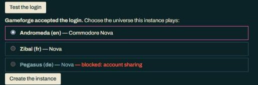
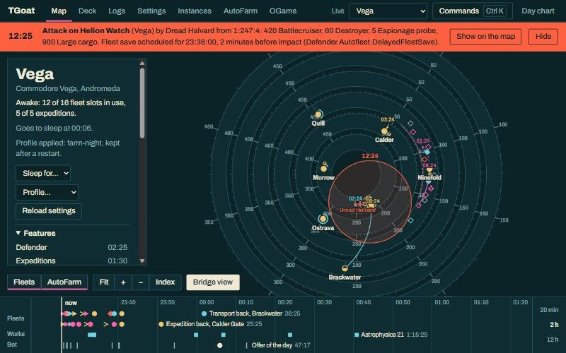
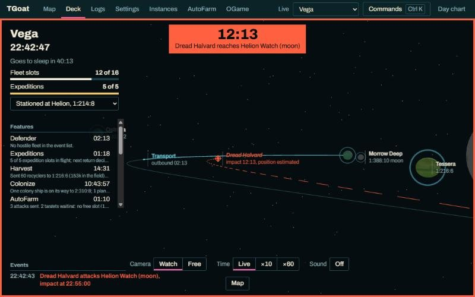
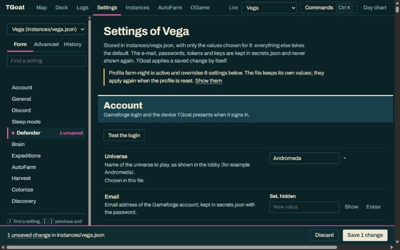
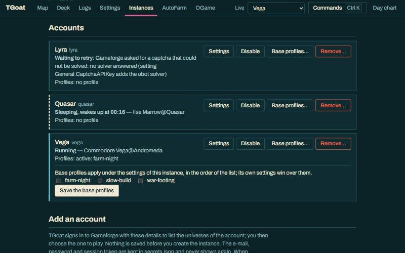
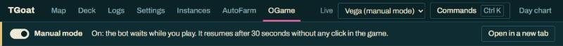

Web interface
Tour of the web interface
When another computer can reach TGoat, every page first asks for your password: see Sign-in.
The top bar links seven pages: Map, Deck, Logs, Settings, Instances, AutoFarm and OGame. What they share is in On every page.
First run: adding your account
With no account yet, TGoat opens the Instances page at Add an account. The other pages link to it.

- In Name of the instance, type a name for this account.
- In Community, type the two letters of your game community, such as
en. - Enter the E-mail and Password of your Gameforge account.
- If Gameforge asks for a captcha, or for two-factor, click Sign in with your browser under Session token (how). On a server, click Sign in from another computer (how). Or paste a Session token (how). While a browser sign-in runs, the lobby and proxy fields are locked: cancel it to change them.
- Tick Pioneers test lobby only if you play there.
- For a proxy, tick Connect through a proxy and fill in its fields. Tick Login only to use it just for signing in.
- Click Test the login. With a captcha, this can take a minute. Nothing is saved yet.
- Pick the universe this instance plays. A blocked player shows in red and can't be picked.
- Click Create the instance. It connects at once, with every feature off.

When the test fails, TGoat says why. Fix the details and test again, or click save it without testing and type the universe yourself. An account with no player needs one first: create it from your browser.
A Telegram (optional) section then asks for the Bot token that @BotFather gave you. Click Save the token, then Link Telegram: open the link or scan the code, and tap Start in Telegram. No chat ID to find. Or click Skip. The steps are in Setting up Telegram.
Next, open Settings and turn on features one section at a time. Each feature's switch sits in its section title.
If you come from TBot 3.6, your accounts are already there, with an Import report. If the import was blocked, a red banner shows the report and no instance starts until you fix the old files.
Map
The Map is the home page: your whole empire at a glance, with fleets in flight, incoming attacks and what comes next.

- The instance panel (left): status, commands, and the Features and Key folds.
- The chart (centre): one ring per galaxy, galaxy 1 inside. System 1 is at the top; systems run clockwise.
- The tools under the chart: layers, zoom, Index and Bridge view.
- The detail panel (right) opens when you click something. Esc closes it.
- The timeline (bottom): everything due in the coming hours.
Reading the chart
Your planets are gold discs that fill from the bottom as their fullest storage fills: a full disc is losing production. Coloured lines are fleets in flight, with an arrowhead and a countdown where the fleet is now. A blue ring means a build, a red ring an attack. Hover anything to see its name.
All the marks of the chart (14), build rings and attacks
Fleet routes are bright for the part left to fly.
A blue ring fills around a body while it builds, clockwise from the top. Zoom in and the body gets a third line: what builds, the time left, and +1 for each other busy queue. Hover the body to list them all.
An attacked body gets a red ring, and a red circle closes on it as impact nears. The game does not say when the hostile fleet left, so the map shows no position for it.
| You see | It means |
|---|---|
| Gold disc | Your planet. |
| Small disc beside it | Its moon. |
| Blue ring | Building in progress. The faint part is what is left. |
| Red ring | Under attack. |
| Gold line | Expedition. |
| Pink line | AutoFarm raid or attack. Dotted: espionage. |
| Blue line | Transport, deployment (dashed), harvest (dotted), colony ship. |
| White dashed line | Fleet save. |
| Grey line | Any other mission. |
| Round dot | Fleet holding at its destination. |
| Cross, italic coordinates | A destination that isn't yours. |
| Red triangle | The attacker's planet. |
| Diamonds | AutoFarm targets, as on the AutoFarm page. |
| Ticks inside a ring | Systems AutoFarm scanned. Pink: targets found. |
The instance panel
The status sentence says whether the instance is awake or asleep, and how many fleet and expedition slots are in use. A login problem shows in red.
- Sleep for… puts the instance to sleep now, for 30 minutes to 8 hours. Wake up ends it.
- Profile… loads a profile, or resets to the instance's own settings.
- Reload settings reads the settings files now. TGoat already does it when a file changes.
- Features lists each feature with its state and the countdown to its next pass. Click one to open its panel, or to turn it on or off.
- When a research runs, a line names it with its countdown. Click the name to see why TGoat chose it.
A sleep you ask for, and bedtime
Bedtime still happens at its time, with its fleet-save, and the instance stays asleep. If the sleep ends during the night, it sleeps on until the wake-up time. A new connection to the game keeps the sleep; disabling the instance or restarting TGoat ends it.
The Defender while the instance sleeps
Every request to the game marks your current planet active, even a look at the event list. So by default the Defender watches on alert (Defender.NightWatch set to OnAlert). TGoat keeps the game's notification channel open, as the game tab of a browser does, day and night; it marks no activity. At night the Defender sends nothing while no message comes.
- A new message, a spy report for example, brings a check 1 to 3 minutes later. If it sees no attack, one more check comes 8 to 15 minutes after the message (
Defender.NightWatchFollowUp): most attackers send their fleet a few minutes after reading their report. A later message, not in the same burst as the first, gets its own look 8 to 15 minutes later. Any message counts: your fleets' reports and private messages too. The Defender listens by day as well, so a message just before bedtime keeps its checks at night. - A reconnection of the channel at night brings one check: a message may have come while it was not listening.
- An attack it sees is followed until it is handled or gone.
- Every 20 to 40 minutes, TGoat checks that the game still listens, without asking the game anything. If the game ignores or refuses that check, TGoat opens a fresh connection every 20 to 40 minutes instead, before closing the old one, so nothing is missed.
An attack sent without a fresh espionage report, or after these checks, is not seen. If the channel cannot open, stays down, stops answering, reopens more than 4 times in an hour, or your proxy refuses its port, you get a warning and the Defender checks at its sleep pace (every 4 to 8 minutes by default) until the wake-up. Always does that all night, so one planet looks active. Never starts no new check; an action already planned (a fleet-save, a recheck, hiding resources, a missile defence held by a passing error) still happens. The bedtime notice says which one applies.


The detail panel
Click a planet, moon, fleet, attack, feature or AutoFarm target to open its panel on the right.
What each panel shows (5 kinds)
- A planet or moon:
- storage and time until full;
- Works: what builds, with its countdown (buildings, lifeform buildings, lifeform research, shipyard), and which queues are idle;
- Levels: every building, the one in progress highlighted, and under them TGoat's decision with its reason and next pass. On a planet with a lifeform, Lifeform shows its lifeform buildings;
- the other decisions, flights, docked ships and defences.
- A fleet: its Schedule, ships, cargo and the feature that sent it. Board this fleet follows it in 3D.
- An attack: the countdown, the attacker, the Defender's decision and the attacking fleet.
- A feature: its Last pass with the reason code, a Turn on now or Turn off now button, and Open its settings.
- An AutoFarm target: its state, the reason and its last report.

Turning a feature on or off
You can turn a feature on or off while TGoat runs, whatever its Active setting says. The settings files do not change.
- Click the feature in the instance panel of the Map, or in the list of the Deck.
- Pick how long in the duration list: until I undo it, for 1 hour, 4 hours or 24 hours.
- Click Turn on now or Turn off now.
- To go back, click Follow the setting.
The same choice is in the command palette (Ctrl K): Turn AutoFarm off now, or type off autofarm 45m or on expeditions 2h. Telegram and Discord have commands for it.
With the Defender turned off, nobody watches for attacks. The Deck and the Map say so in red.
What the states mean, and when your choice ends
In the Features list, a feature that isn't running reads off (in the settings), off by you or off until 12:11 (turned off by hand) or paused (sleep, manual mode, or while you play in the game). One you turned on by hand reads on by you. In its panel, the state line shows both the state you chose and the setting: Running, turned on by you (setting: off), Off until 18:00 (setting: on).
The choice ends when you click Follow the setting, when the duration ends, or when the feature's Active setting is written (Settings page, /settings set, a text editor). Reloading the settings, sleep, breaks, a reconnection, loading a profile and a restart of TGoat do not end it.
Sleep, manual mode, breaks, a planned ghost sleep and the wait while you play still hold a feature you turned on: it starts when they end. The Whole Brain row turns the whole Brain on or off. A Brain feature you turn on while the Brain is off runs alone, without the rest of the Brain.
Play mode: Human, RAGE, Custom
One switch sets how fast TGoat plays. It sits under the instance name on the Map, on each card of the Instances page and at the top of the instance's Settings. In Telegram or Discord, /mode shows it and /mode rage sets it.
- Human (default) plays like a player: reactions of a few minutes, short pauses, each free expedition or exploration slot filled at the next check, pages 1.5 to 8 seconds apart, and the breaks you set.
- RAGE drops every delay kept only for discretion, for the most yield. TGoat reacts within 1 to 3 seconds, fills every free slot at once, checks ten times as often (at most once a minute), loads pages 0.3 to 1.5 seconds apart and takes no break. It is easy to spot.
- Custom applies the
Pace.*settings one by one. Left at their defaults they play like Human. Under Human and RAGE they are greyed out, exceptPace.Waves.
Pace.Waves (off by default) sends expeditions and explorations in waves, like a player who comes back now and then: expeditions once a third of their slots are free or the oldest free slot has waited 20 to 60 minutes, explorations once half of them are back. It costs yield, since a slot can stay empty up to an hour. It works in Human and Custom; RAGE ignores it.
Switching applies at once: nothing restarts, and features waiting on a long delay move forward. Game rules and safety do not change with the mode: the Defender's pace, the attack guard, fuel reserves, slot ranks, sleep and fleet-save times.
Directives
Directives is a feature like the others, off by default (Directives.Active). It collects the rewards of finished missions; its panel in the Features list gives the last pass: how many rewards TGoat collected, or why it collected none.
Its notices, and how often it collects
Directives.Notify says when you get a notice: every reward, only when Dark Matter comes in (the default), or never. The notice and the log line name each mission and its chapter. A mission that is not finished is never collected.
Every game page shows how many rewards wait. TGoat reads that number from the pages it already loads, and when it goes up it collects sooner, but not more than once every 30 to 60 minutes. The reason codes are in the table below.
The timeline

Three lanes: Fleets (arrivals, returns, attack impacts in red), Works (buildings, lifeform buildings and research, shipyard, research) and Bot (next passes, the end of a feature you turned off or on for a while, the end of the wait while you play, sleep and wake-up). For AutoMine and the lifeform features, the next pass is the next build, with its planet. Crowded events shrink to their mark: hover to read one, click to show it on the map. 20 min, 2 h, 12 h or the mouse wheel change the scale.
Moving around
- Drag to move. Use the wheel or double-click to zoom. Fit (0) shows the whole universe.
- Fleets (F), Works (W) and AutoFarm (T) show or hide the routes, the construction rings and the AutoFarm layer.
- Index (I) lists attacks, bodies and fleets as text. Click a line to show it.
- To find a planet, press Ctrl K and type its name.
- Bookmark the page to come back to the same planet or fleet.
The bridge view

Bridge view (B) puts you aboard a fleet in flight, in 3D, with its route, countdown, ships and cargo. A list at the top changes fleet. Back to the map or Esc leaves.
It needs a wide screen and a browser with 3D graphics. While the instance is not connected, the button is greyed out.
Command deck
The command deck (Deck) shows your empire in 3D from your flagship, framed by instruments. Leave it open on a second screen to watch for attacks.

- Top left: the game server clock, the next sleep or wake-up, and the Fleet slots and Expeditions gauges, gold when full.
- Left: Features and Brain, with countdowns and last results.
- Centre: your bodies and fleets. A hostile contact shows in red, labelled "position estimated".
- Top centre: the countdown to the next impact, or a sleep or manual-mode notice.
- Bottom left: Events, the last six things that happened.
Click anything to lock the camera on it and open its panel, with Open on the map. Esc releases it.
- Camera: Watch turns to each event by itself; Free lets you steer.
- Time: ×10 or ×60 previews what comes next, without touching the game. Back to live returns.
- Sound: On plays an alarm tone when an attack is detected.
- Works (W): On draws the map's ring around each body that builds. The choice is shared with the Map.
- Stationed at … picks the planet the flagship guards.
The deck needs a screen wider than 760 pixels and a browser with 3D graphics.
Proposals
A feature set to Suggest (Brain.Boosters, the AutoMine production settings, Expeditions.BuildFleet, AutoFarm.BuildBreakers) does not act alone: it sends you what it would do and why, and waits. Each proposal has a number. To accept one:
- its notification has an Accept button;
- the command deck lists every proposal waiting, each with its button;
- on the Logs page, a line that names it has an Accept button;
- the command palette (Ctrl K) offers "Accept proposal N";
- on Telegram, send
/accept N, or/acceptalone for all of them;/proposalslists them; - Discord has
/proposals list,/proposals acceptand an Accept button under the notification.
TGoat checks that the reason still holds before it acts.
What happens when you accept, and when a proposal goes away
When you accept, TGoat first reads the game again and checks that the reason still holds. If it does, TGoat makes the change and tells you. If it no longer does, for example the storage has filled up or you activated a booster yourself, TGoat refuses and says why. If the game could not be read, the proposal keeps waiting. A proposal disappears when the feature no longer proposes it or when it expires; the same proposal is not sent to you twice in a day. A restart of TGoat drops what is waiting, and the features propose again.
AutoFarm
The AutoFarm page shows what AutoFarm scanned, each target with its state and the reason, and the attacks it sent. It refreshes every 10 seconds.

The status sentence gives AutoFarm's last and next pass, and the fleet slots its attacks and probes use. See the targets on the map and AutoFarm settings lead to the Map and to its settings.
In the sector, tinted columns are scanned systems, pink where targets were found. The white "scan" line is where the scan is now. Hover a diamond to read its reason; click it to find it in the table.

Targets lists every target with its state, Loot in the report, Reason and the age of the Report. The list above it filters the table, for example to Not suitable, and why.
To learn why a target is not attacked, read its Reason. The detail names the setting that decided, such as AutoFarm.AttackDefendedTargets.
| Diamond | State |
|---|---|
| Pink, filled | Attack in flight |
| Pink, hollow | Attack waiting for a slot, ships or a setting |
| Blue, filled | Being probed |
| Blue, hollow | Needs probes: no report, or an expired one |
| Red, hollow | Probes failed: the report lacks details |
| Grey, hollow | Not suitable, or Idle (resting after a raid) |
Attacks sent gives each attack's net gain once the fleet is seen coming back, or its expected loot, marked "~", before that. A fleet destroyed in battle shows in red. What AutoFarm logged shows its latest log lines.
Settings
The Settings page edits every setting of TGoat, of an instance or of a profile, with help for each one.

- Left: the file to edit, the Form, Advanced and History tabs, Find a setting, and the sections.
- Top: banners, such as a profile overriding some settings (Show them lists them). A profile has Export… and Share… there (see Sharing profiles); they send the saved file, not unsaved changes.
- A feature's on/off switch sits in its section title, such as Watch for attacks for the Defender.

Under each setting, a note says where its value comes from, such as Default value or Chosen in this file. A pink edge marks a change not saved yet, a red edge a value refused.
A number that can reach 10,000 or more, such as a resource amount, also shows a small readout next to its field with the digits grouped ("10,000,000 (10 M)"); it follows what you type and changes nothing in the field.
Every note and edge under a setting (6)
| You see | It means |
|---|---|
| "Default value." | The file doesn't set it. |
| "Chosen in this file." | Set here. Use the default removes it. |
| "From the base profile …" | From a base profile. |
| Gold edge | A loaded profile overrides it for now. |
| Pink edge, "Changed, was …" | Not saved yet. Undo cancels it. |
| Red edge | Value refused, with the reason. |
Secrets (e-mail, passwords, tokens, keys) show only "Set, hidden" or "Empty". Type a new value to replace one, or click Erase. The stored value never reaches the page.
Saving
Changes wait in the bar at the bottom. Click Save 1 change (Ctrl S) or Discard. If a value is refused, nothing is saved.
TGoat applies a saved change by itself, restarting only the features concerned. Saving a login setting of a connected instance asks first, because it then logs in again.
If someone changed the same setting in the file meanwhile, choose Take the file's or Keep mine.

In Account, Test the login signs in with the form's values without starting anything, and lists your players.
Under Gameforge session token, the sign-in panel has two buttons: Sign in with your browser and Sign in from another computer. Sign in with your browser and TGoat on another computer explain them.
- Sign in with your browser says "Opening a browser on the computer that runs TGoat…", then "A browser window is open: sign in to Gameforge there. Waiting…". Cancel closes the window and the panel says "Sign-in cancelled."
- Sign in from another computer says "On the computer where you want to sign in, run this command within 10 minutes:", shows the command with Copy, then "Waiting for tgoat login…". Once the command has opened its window: "tgoat login opened a browser on the other computer: sign in to Gameforge there. Waiting…".
- When the token arrives, the panel says "Gameforge session token stored. The instance connects with it now." For a disabled instance: "The instance uses it once you enable it."
- On a running instance, a confirm box comes first: the new token logs it out and in again.
- After 10 minutes the panel says "No sign-in within 10 minutes: the browser window was closed." (or "The pairing code expired."), with Try again. A failure says "The browser sign-in failed:" and the cause, with Try again. When
tgoat loginfails or is cancelled on the other computer, the panel says so at once: "tgoat login stopped before the sign-in finished (its terminal says why)" or "Sign-in cancelled.". If TGoat stops answering, it says "TGoat does not answer right now: trying again." and gives up after about 10 seconds. If TGoat still cannot be reached to stop the sign-in, the panel adds that its window or code may stay open for up to 10 minutes.
Priority lists
Slot priority (General.SlotPriorityLevel) and spending priority (Brain.SpendingPriority) are lists, not number fields. The list shows the effective order, first at the top.
- Drag a feature by its grip or name, or click its up and down arrows.
- To give two features the same rank, tick Tied with the one above. Tick it again to untie them.
- Read the sentence under the list: it says what the order does, for example "When fleet slots run short: Expeditions first, then Brain, then AutoFarm and Colonize together."
- Save as usual.
How the ranks are written: ties, rank 0, hand edits
On save, TGoat writes the ranks as 1, 2, 3 and so on, and ties share a number. A file edited by hand keeps its numbers until you change the order. A rank of 0 takes a feature out of the ranking: it is shown apart, with a Rank it button. The Advanced tab still shows the numbers.
Finding a setting
Type in Find a setting to search names and help texts. Type changed: to list your unsaved changes, or profile: for the settings a profile overrides.
Advanced and History
Advanced shows the file as written and lets you edit it. Save the file points to the line and column of any mistake.

History lists the saves of the last 90 days (100 at most), with the settings each one changed. Restore brings a revision back; secrets keep their current values. A restore is itself a revision you can undo.
How do I… reset a value, undo a change, edit a profile
- …go back to the default value? Click Use the default under the setting, then save.
- …undo yesterday's change? Open History, then Restore the revision before it.
- …edit a profile? Pick it at the bottom of the file list.
- …give a profile to a friend? Open it, then Export… at the top.
Sign-in
In the TGoat file, the Web interface section ends with the sign-in panel. It says whether sign-in is required here and why, then:
- Change password (current, new, same again). Every other browser is signed out. Without a password yet, Set password, with the setup code from TGoat's console or log file.
- Set up an authenticator app: a QR code and the secret in text. Type the code the app shows and your password, and click Turn on. The 10 recovery codes appear once, with Copy; click I saved them. Once it is on, type the password to get New recovery codes or to Turn off the app.
- Passkeys: the list (name, the host name it works on, added, last used, Remove), and whether
WebUI.PasskeyAloneis on. To add one, type its name, your password (and the app's code if it is on), click Add a passkey and confirm in your browser. The first one added without the app shows 10 recovery codes once. Remove asks for the password. Over plain http on another name thanlocalhost, or at an IP address, the panel says why passkeys are unavailable and Add a passkey stays greyed out. - The signed-in browsers: browser, address, last seen, signed in, and Sign out for each. Sign out everywhere signs out all of them, this one included.
Setup assistant
The default settings are written for a new account. The setup assistant reads where your account stands, asks the few things it cannot read, and proposes settings that fit, with the reason for each. It writes nothing until you click Apply.
It only changes settings. The features keep deciding with their own logic, and the assistant never builds ships for you: when a feature needs ships you do not have, the plan says how many to build first.
Opening it
The first time, a banner on the Map offers it once TGoat has read your account. After that, open it with the Setup assistant button at the top of an account's Settings page, or from the command palette (Ctrl K).
When it offers itself, and what it reads first
- First run. Once TGoat has read your account, a banner on the Map says "TGoat read your account. Answer a few questions to get settings that fit it." Click Start, or Not now. It shows once per account: it does not come back after Not now or after you applied a plan. Opened any other way, the assistant has a Close button instead of Not now.
- New stage. When the account grows, one line in the Logs says so, once per stage, for example "Your account reached the Growth stage (5 of 9 planets, mines at level 21): the setup assistant may suggest better settings." No pop-up.
Opening it may read your Empire view and your inventory once, if TGoat has not read them in the last 10 minutes. If the account is not read yet (TGoat is still logging in, or the game is unreachable), the assistant says so and offers to try again. It never builds a plan on an account it has not read.
The questions
At most seven, one per screen, about your goal, presence, sleep, risk, expeditions, expansion and notifications. Each answer is already filled in from your account, with the reason in small print. A question that does not apply is skipped.
The seven questions and what each one drives (7)
Each screen has Back and Next and the step. The plan counts as the last step: with seven questions, the third reads "Step 3 of 8". A choice you made yourself is the answer filled in, for example expeditions you turned off or your notification level ("You chose Attacks only").
| Question | What it drives |
|---|---|
| Goal: grow the economy, raid inactive players, or both with the economy first | Whether AutoFarm is turned on, and the research profile. |
| Presence: when you are away for long (nights, work hours) | Sleep mode's hours (when you give them), breaks, and whether the sleep question is asked. |
| Sleep: should TGoat sleep too while you are away at night? Yes or no | Asked only when you are away at night (night, both, away most of the time, or your own hours), and filled in from your current Sleep mode setting. Yes: Sleep mode on, the night fleet-save, and the night round of expeditions if you chose A lot. No: TGoat keeps playing all night, which gives more yield but looks less like a player; the plan turns Sleep mode off if it is on and proposes none of those. The Defender stays on either way. |
| Risk: careful, balanced or bold | Which targets AutoFarm attacks, whether expeditions take a combat ship, whether the Defender hides resources in a build. |
| Expeditions: none, some or a lot | How much expeditions matter next to the Brain's flights and raids. Some: they use the fleet slots left after the Brain and raids. A lot: first in line, and a night round when you are away. The fleet of each expedition is always calculated, whatever you answer. Asked only when you have astrophysics and a ship that can fly. |
| Expansion: fill the free planet slots or not | Colonize on or off. Asked only when slots are free. |
| Notifications: attacks only, important, or everything | Notifications.Level. Asked only when Telegram, the Discord bot or a Discord webhook is set up: the level only filters those. |
If your answers contradict your account, the assistant says so. For example: "You want to raid, but you have no cargo ships: the plan suggests building some first."
The plan
The plan is a short list of themes: Economy, Raids and harvest, Expeditions and discovery, Expansion, Logistics, Safety and Notifications. Only the themes that change something appear. Each one shows:
- what it changes, in one sentence;
- Why: the reason, with the numbers of your account;
- Show the N settings: each setting with its current value, the proposed one and a short reason;
- Apply and Skip.
At the bottom, Apply N themes applies every theme you did not skip. The numbers in the plan come from the same calculations the features use. The assistant does not propose colonisation zones or temperatures: for Expansion it only turns Colonize on or off and says how many slots are free. A theme with nothing to propose can say why under Nothing to set.
What it never changes
A value you set yourself, a setting an active profile decides, or a profile file. You can still tick a value of yours to change it.
The three cases in detail (3)
- Values you set yourself. A value equal to the default is open to change. One you changed through the web interface, a command or a hand edit is yours, and so is a value whose origin TGoat cannot tell and that differs from the default. A theme says "N settings you set yourself keep their value". Open its list to see them with the proposed value. Tick Use the proposed value on a setting to change it, or Also apply to these N to tick all of them in that theme. Nothing is ticked for you.
- Settings decided by an active profile. The list says "Set by profile X (active until …)" and the assistant leaves them alone. Turn the profile off first if you want to change them.
- Profile files. The assistant writes only the account's own settings file. A setting inherited from a base profile can be overridden there: the list says "Overrides profile X for this account".
Undoing it
Each Apply is one entry in the settings history, marked "by the setup assistant". Restore the version before it from Settings, History. Running the assistant again right after applying proposes nothing already applied. Values the assistant wrote stay open to change.
When a plan can no longer be applied
Applying writes only the plan you saw. Nothing is written if one of its settings changed in the file since (you edited it meanwhile), or if the account moved on and the plan would now write other values (a research finished, ships were built): "The plan changed since you saw it (the account moved on): make the plan again." The assistant then offers Make the plan again, which keeps your Skip choices and ticks. Going Back from the plan to the questions keeps them too. After applying, the assistant says how many settings were written.
Logs
The Logs page shows everything TGoat writes, live, and narrows it down to the lines that matter.

- The filter bar: search, lowest level, instance, sender, Colours, Filter by…, Pause and Follow.
- The volume strip: lines over time, gold for warnings, red for errors. Click it to jump there.
- The lines: time, feature (with the instance in front when there are several), a ⚠ for a warning or a ✖ for an error, then the message across the whole width. A pink "×3" means three identical lines in a row.
The lines look like the console and log/TGoat.log. In a terminal, the console (Readable style) wraps a long message to the window, with the action first and each reason on its own line:
03:12:48 AutoMine Started MetalMine level 27 on planète mère [P:1:446:4]
↳ best return on investment (9.70 days)
↳ production settings unchanged: the current settings already give the
most with this energy
03:15:16 Instance ⚠ You act in the game (a queue change on G1-Noname [P:3:447:4], not ordered by
TGoat): the features that build or send fleets wait until 03:25:16Every message starts at the same column: long feature names are shortened there (LF Research, LF Mine, Research, Discovery, Repatriate, Scheduler, DailyOffer, JumpGate), and the instance name (Main › AutoMine) shows only when more than one instance runs. With colours, coordinates, numbers, durations, times and setting names are in bold. The Logs page uses the same short names and instance rule (point at a name to see it in full) and keeps one line per message; TGoat.log and a redirected console (a file, Docker without a terminal) keep one line per message with full names. Logging.Style picks the layout: Readable (the default), Levels ([Info], [Warning]) or TBot ([17:56:25 INF Main|Directives]). Changes apply at once.
Each feature's name has its own colour, in the console and on this page. Colours changes them.
Changing a feature's colour, or turning colours off
- On the Logs page, click Colours. Each feature is listed with its colour.
- Click the colour swatch next to the feature.
- Pick a colour, No colour, or Automatic to give it back the colour TGoat chose.
The choice is saved in tgoat.json (Logging.FeatureColours) and applies at once; the panel marks it "yours". To colour only the levels, or nothing at all, set Logging.Colours to Levels only or None (the panel's Log settings link opens it). The NO_COLOR environment variable turns the console's colours off.
Attributes are what a line is about, such as a planet (1:214:8) or a reason code (no_free_slot). Click a line: its detail lists them, each with Filter to keep only the lines that have it. Attributes in the bar also shows them as chips at the end of every line, which you click the same way. Click a filter's × under the bar to remove it.
Click a line to open its detail. Show on the map or Open the setting appear where they apply, and Copy line copies it.
In a message, coordinates, setting names, durations such as "in 19m25s", clock times and proposal numbers are underlined with dots. Point at one, reach it with Tab, or tap it once on a phone, and a card shows what TGoat already knows. A planet or moon of yours shows its resources, docked ships and what it is building, with the end time; anyone else's shows "Not yours" and what the line says. A setting shows its value on that instance and its help. A duration or a clock time shows the time it stands for, counting down. Click a coordinate to open the map on it, or a setting to open it in Settings. A line that names a proposal still waiting has an Accept button. There is no Refuse: a proposal you leave expires on its own.
- Pause freezes the list until you click Resume.
- Follow keeps the newest line in view; scrolling up turns it off.
- The page loads the last 2,000 lines (
WebUI.MaxLogsToShow). - The instance switcher doesn't filter the logs: use Every instance.
How do I… find why something didn't happen, follow one planet
- …find out why something didn't happen? Pick the feature in Every sender and Warnings and errors, or click a line and Filter on its reason.
- …follow one planet? Click a line about it and Filter on its celestial.
- …change the setting a warning talks about? Open the line, then click Open the setting.
Reason codes
Each pass of a feature ends with a reason code. It shows in the feature's panel and in the detail of the log line, which also names the setting that decided.
slots_reserved means fleet slots are free, but kept for higher-priority features (General.SlotPriorityLevel). The detail gives each feature's share. no_fleet_slot means no slot is free at all.
Reason codes new or changed in the reviews (139)
| Code | Feature | Meaning |
|---|---|---|
storage_for_the_next_build | AutoMine | A storage is raised before a build that would take more than 90 % of it, which leaves room for the other spending of the planet. As a refusal: the storage cap blocks it. |
build_exceeds_storage | AutoMine | The build costs more than a storage holds. Only a supply flight or a bigger storage can pay it. |
a_build_queue_is_the_bottleneck | AutoMine | Nanites or robotics, because a build queue is the bottleneck. |
energy_for_the_next_mine | AutoMine | An energy source is built before the next mine, which would otherwise leave too little energy. |
needed_by_what_is_built_here | AutoMine | Shipyard or robotics needed by what TGoat builds there. |
stock_spent_under_attack | AutoMine | A build started with what the fleet-save could not carry (Brain.AutoMine.SpendStockUnderAttack). |
supply_not_worth_it | Brain | No supply flight for a purchase that neither pays back nor unlocks anything. |
event_list_unreadable | Brain | No supply flight while the event list cannot be read. Tried again after the next read, 1 to 2 minutes later. |
attack_incoming | Brain | No supply flight, satellite or crawler while an attack is coming. Tried again after the impact. |
reserved_for_builds | Brain | The stock is kept for the Brain's next builds or as fleet-save fuel. The detail names each build, what it keeps, and the Brain.SpendingPriority rank that would let the feature spend it. |
reserves_not_known_yet | Discovery, AutoCargo, AutoDefence, Offer of the day | Nothing spent because TGoat does not know yet what the Brain plans to build on that celestial: it learns it within 15 minutes of connecting, and the detail gives the time. Not a lack of resources. |
research_lab_waiting | AutoResearch | A lab level is wanted and the building queue is busy. It is built when the queue frees. |
no_research_lab | AutoResearch | "No research lab yet" on this planet. On a new account, AutoMine's opening order asks for lab 1 after metal mine 5 and crystal mine 3. |
queue_page_stale | Brain | A build still shows as in progress after its end, 3 checks in a row: the game page seems stale, or your computer's clock is ahead of the server. Said once; the next checks wait the usual delay. |
computed_stop_averted, negative_delay_averted | Brain, any feature | A pass computed a wait of zero or less without being done. It runs again later (about 10 minutes for a planet's Brain worker, 30 to 90 seconds otherwise) instead of stopping. Report it if it repeats. |
lifeform_energy_needed | Lifeforms | The next level needs more energy than available, and AutoMine does not supply this planet. |
waiting_for_energy, waiting_for_population, waiting_for_research | Lifeforms | Retried later, not a stop. |
waiting_for_tech_building | Lifeforms | Research waits for the technology building upgrade to end. |
yield_to_robotics | Lifeforms | The queue waits up to 30 minutes for the robotics or nanites AutoMine wants. |
no_open_lifeform_slot | Lifeforms | No lifeform research slot is open yet; the detail says which population opens the first one. It replaces no_lifeform_research_started. |
lifeform_slot_chosen | Lifeforms | The technology of an open slot was chosen (guaranteed or random). One line per slot, and a notification. |
lifeform_slot_to_choose | Lifeforms | An open slot waits for you to choose its technology: SlotChoice is Never, its limit is 0, or its guaranteed technology could never be researched. Checked again at the interval. |
lifeform_slot_choice_failed | Lifeforms | The game refused the choice, or the page still shows the slot empty. A warning; tried again at the interval. |
lifeform_research_over_budget | Lifeforms | A research level without a production bonus costs more than Brain.LifeformAutoResearch.MaxHoursWithoutYield hours of the planet's production. The detail gives its cost in hours. |
defence_budget_reached, no_defence_budget | AutoDefence | Defences match the budget; or a moon, which produces nothing. |
repatriated_before_sleep | Repatriation | At least one celestial made its last flight before bedtime. |
offer_already_bought, offer_too_expensive, offer_no_surplus | Offer of the day | Nothing on offer; price above Brain.BuyOfferOfTheDay.MaxPriceHours; no celestial can pay from its surplus. |
jump_gate_recharging | Jump gate | The gate recharges. The next pass follows the recharge. |
jump_target_attacked, jump_attacks_unreadable | Jump gate | No jump: an attack is heading for the target, or the event list could not be read. |
no_usable_fleet | Expeditions | The origin has no usable main ship. |
waiting_for_wave | Expeditions | Too few slots are free yet: MinFreeSlotsForWave, or a third of the slots with Pace.Waves. |
waiting_for_night_round, night_round_sent | Expeditions | The next expedition would return during sleep; the night round left. |
harvest_not_worth_fuel | Harvest | Every field costs more than 10% of its value in fuel. |
origin_refused, no_origin_surplus, daily_budget_spent | Discovery | The game refused the origins (its text is quoted); no origin has the surplus (the detail names what holds the largest one); the day's budget is spent. They replace no_ships. |
lifeform_settled, lifeform_refused, lifeforms_unreadable, planets_without_lifeform | Discovery | A lifeform settled on a planet; refused by the game (tried again 30 to 60 minutes later); the Lifeforms page could not be read; planets left without a lifeform (AutoDiscovery.SettleLifeforms). |
colony_ships_for_astrophysics | Colonize | Colony ships built during an Astrophysics research that opens a planet. |
lifeform_not_needed | Lifeforms | Nothing to build, but not because of the Max levels: the buildings below their Max are not needed now (living space beyond the 1.55 million of the tier-1 research slots, food that already feeds the whole living space, a building without return while BuildNonEconomic is off…). The line names each building with its numbers and what would build more, such as turning on BuildNonEconomic, with the building it would start first (housing and food below their Max included). With that option on, housing that would outgrow food at its Max says so. Checked again at the interval. |
lifeform_research_building_needed | Lifeforms | The planet's research building (the Research Centre for Humans), or a requirement on the way to its level 1. No lifeform research starts without it. Only while lifeform research is on for the planet. |
lifeform_bonus_maxed | Lifeforms | The only lifeform research left below its Max is research whose bonus the game marks as already maxed out: another level would cost and add nothing. The line names each one and its bonus. Checked again at the interval. A building marked the same way is no longer built for itself (still as a requirement), and the line of each pass names it. |
directives_collected, directives_missions_done | Directives | Rewards collected, each named with its chapter; or a mission done, its reward comes with a next check. |
directives_nothing_ready, directives_held | Directives | Nothing waits; or sleep, a break or manual mode: nothing is read. |
directives_unreadable, directives_refused | Directives | The menu or a chapter could not be read, or the game refused a collect. Tried again within the hour. |
directives_disabled | Directives | The feature was turned off while it ran. |
directives_menu_seen | Directives | A game page showed more rewards waiting: the next collect comes sooner, never less than 30 to 60 minutes after the previous one. |
attack_alert_seen | Defender | A game page showed the attack alert: the Defender checks the event list 5 to 15 seconds later. |
galaxy_attack_seen | Defender | A galaxy view showed your selected planet or moon under attack: the Defender checks the event list 5 to 15 seconds later, once per celestial seen under attack. |
game_message_alert, game_channel_listening | Defender | During sleep: a new game message arrived, the Defender checks 1 to 3 minutes later (and 8 to 15 minutes after it if nothing was seen); or the game's channel listens again, one check soon. |
waiting_for_message, night_watch_off | Defender | During sleep: it waits on alert with no request; or Defender.NightWatch is Never. |
night_watch_unavailable | Defender | The game's channel cannot open, stays down, stops answering, or your proxy blocks its port: a warning, then a check every 4 to 8 minutes until the wake-up. |
fleet_save_switch_skipped, fleet_save_switch_refused | Defender | The fleet-save did not go first to the moon or planet at the same position (Defender.Autofleet.SwitchFirst): a hostile fleet lands there, or the game refused the move. The usual choice runs. |
fleet_save_destination_targeted | Defender | A warning: no fleet-save destination was left once your planets and moons that a hostile fleet targets were skipped; the line names them. The last resorts run. |
fleet_save_target_unused | Defender | The fixed destination (Defender.Autofleet.Target) was not used; the line says why. The usual choice runs. |
fleet_save_recall_moved | Defender | The recall of a saved fleet moved because of a new hostile arrival, was set before the fleet lands on a moon or planet near a hostile arrival, or was cancelled. |
fleet_save_recall_unsafe | Defender | No recall moment brings the fleet back after every hostile arrival plus the safety margin: a warning and a notice; the recall keeps the old moment. |
hostile_fleet_not_on_celestial | Defender | A hostile fleet is heading for something that is none of your planets or moons, after the celestial list was read again. No fleet-save, no alarm; one notice per event. |
event_mission_unknown | Instance | The event list shows a mission TGoat does not know (Project Orion adds some). A hostile one aimed at your celestials is handled as an attack. Said once per mission. |
galaxy_view_dispatch_failed | AutoFarm | The galaxy view's spy button was refused; that target's probes went through the fleet page. A warning the first time. |
galaxy_report_used | AutoFarm | With AutoFarm.ProcessAllReports, a target was judged on the espionage report a galaxy view showed on it, read and deleted instead of probing the target again. |
incomplete_report, research_hidden, probes_exhausted, no_extra_probes | AutoFarm | The report hid the fleet or defences, so a second espionage goes with three times your probe count, or every probe at home if fewer; after it, the research is still hidden on a target with ships or defences, or the fleet or defences still are; no origin had more probes at home than your count, so there was no second espionage. The target waits for its report to expire (AutoFarm.KeepReportFor) before it is spied again. |
combat_report_too_old, combat_reports_too_late | AutoFarm | The report of a target with ships or defences was older than CombatPlanner.MaxReportAgeSeconds when AutoFarm came to use it: the target is probed again with the same number of probes, not counted as one of the three espionages, and the next pass reads the report when the probes land. When 3 such espionages in a row still bring a report too old, the target waits for its report to expire (AutoFarm.KeepReportFor). |
storage_too_small | AutoFarm | The loot is below AutoFarm.MinimumResources and the inactive player's storages, read in the report, can never hold enough: the target is blacklisted (AutoFarm.Blacklist.StorageTooSmall). |
combat_rejected_at_confirmation | AutoFarm | The last check before sending refused the plan. The detail says why, such as "4 of 773 final battle simulations failed", a report too old, or ships gone. |
breaker_fleet_proposed, breaker_fleet_ordered, no_breaker_fleet, breaker_order_failed | AutoFarm | A combat fleet for turned-down targets was proposed or, in Automatic mode, ordered; none pays back within AutoFarm.BreakerMaxPaybackDays or the Brain's reserves cannot pay it (the detail says which); the game refused the order (a warning). |
mode_at_start, mode_changed | Instance | The play mode at start-up, or its change, with what it does. |
break_started, break_ended, break_resumed | Instance | A break began, ended, or goes on after a new connection (SleepMode.Breaks.Active). |
you_play_in_game, you_stopped_playing | Instance | You acted in a queue of the game: the features that build or send fleets wait; or the quiet time is over and they start again (General.YieldWhenYouPlay). |
game_signal_action_learned, game_signal_unknown_action | Game | A kind of queue change was learned from TGoat's own order; or one not seen yet came, written once and not counted as you playing. Debug lines: the Logs page shows them when Debug is on, the console does not. |
construction_ended_early | Brain | The game says a build ended before its known end: the queue is read again and the next build chosen after a usual reaction. |
report_announced | AutoFarm | The game announced a new message once the awaited probe had arrived: the espionage reports are read a few seconds later. |
relogin_limit_notified | Instance | The game session was lost too often: automatic logins wait, and you got one notification with the time of the next try. |
web_signin, web_signin_failed, web_signin_after_failures, web_signin_delayed | WebUI | A sign-in to the web interface, from the address in the line; a refusal (a warning, with the failures in a row); a sign-in after failures (a warning: check it was you); a try refused while it must wait (Debug). |
web_password_set, web_signed_out_everywhere | WebUI | The web interface password was created or changed (every other session is signed out); Sign out everywhere. |
web_authenticator_on, web_authenticator_off | WebUI | The authenticator app was turned on, or off (a warning). |
wrong_password, wrong_code, wrong_setup_code, too_many_attempts, sign_in_expired | WebUI sign-in | Answers of the sign-in page: wrong password, wrong authenticator or recovery code, wrong or expired setup code; too many failed tries (it says how long to wait); the code step lasted more than 5 minutes, type the password again. |
no_password, password_already_set, invalid_password | WebUI sign-in | No password exists yet (create it with the setup code or tgoat webui password); one already exists; the new password is too short or not valid text. |
authenticator_not_started, authenticator_already_on, authenticator_off, unknown_session | WebUI sign-in | Settings, Sign-in: the proposed authenticator secret expired, start again; the app is already on, or already off; the session to sign out no longer exists. |
web_passkey_added, web_passkey_removed, web_passkey_refused, web_passkey_cloned | WebUI | A passkey was added; removed (a warning); not added, with why (a warning); refused because its signature counter went back, so it may have been copied (a warning: remove it and add it again if you trust it). |
passkey_unavailable, passkey_alone_off, passkey_expired, passkey_unknown | WebUI sign-in | Passkeys need a host name, and this page was opened at an IP address; signing in with a passkey alone is off (WebUI.PasskeyAlone); the passkey request is over (3 minutes, used once): try again; this passkey is not in TGoat, or works on another host name. |
passkey_refused, passkey_not_verified, passkey_counter_regressed | WebUI sign-in | The passkey answer was refused (made on another page or host name, wrong signature); a passkey alone did not check it is you (PIN, fingerprint or face); its signature counter went back. |
passkey_already_added, too_many_passkeys, invalid_passkey_name | WebUI sign-in | Settings, Sign-in: this passkey is already in TGoat; TGoat keeps 20 passkeys at most; a name is plain text of 64 characters at most. |
web_recovery_code_used, web_recovery_codes_new | WebUI | A recovery code signed in (a warning, with the codes left); new recovery codes replaced the old ones. |
orion_reward_waiting | Instance | A game page showed an Orion reward waiting to be claimed: you got one notification. |
officer_ending | Instance | A hired officer may end within Notifications.OfficerEnding hours: you got one notification, with when it ends. |
Changed meaning: max_level_reached and return_too_slow no longer stop a planet; it is checked again in 11 to 13 hours. For lifeform research, max_level_reached stops it only once all 18 research slots are open. more_expensive_than_mine compares paybacks in days. energy_deficit also covers energy built ahead of a mine.
Every other reason code (295)
| Code | Feature | Meaning |
|---|---|---|
no_fleet_slot | Any feature | No fleet slot is free for the feature, after General.SlotsToLeaveFree. Tried again when a fleet comes back. |
slots_reserved | Any feature | Fleet slots are free, but kept for higher-priority features (General.SlotPriorityLevel). The detail gives each feature's share. |
sleep_time | Any feature | Sleep is near or under way: nothing is sent or started. |
fleets_unreadable | Any feature | The fleets in flight could not be read: nothing is sent this pass. |
no_origin | Any feature | No origin can send: none is set, or none is one of your celestials. |
dispatch_refused | Any feature | The game refused every dispatch of the pass; the detail quotes its answer. |
not_enough_resources | Any feature | Not enough resources, and no supply flight can bring them; the detail says why. |
celestials_planned, watching, no_celestial | Brain | The workers of each celestial started, in the order shown; they are in place and no celestial is new; no celestial to work on. |
construction_started | Brain | A building, research, crawler or satellite order started. |
build_failed | Brain | The game refused a build order (a warning). Tried again at the interval. |
build_not_offered | Brain | The build page shows no build button for the item, so no order was sent (a warning). The line gives the game's own reason, such as "Not enough resources!" or "Requirements are not met". Tried again at the interval. |
building_in_progress, research_in_progress, shipyard_busy | Brain | The queue is busy. The next look comes when it ends. |
waiting_for_production | Brain | The celestial waits for its own production to pay the next build. |
transport_sent, transport_incoming | Brain | A supply flight left for the build; or one is already on its way. |
supply_blocked_by_setting | Brain | Not enough resources, and a setting forbids a supply flight; the detail names it. |
not_enough_population, not_enough_energy | Brain | The next level needs more population, or more energy, than the planet has. |
planet_to_abandon | Brain | Nothing built: the colony misses the criteria of its Colonize zone and waits to be abandoned. |
celestial_gone | Brain | The celestial is no longer yours: its worker stops. |
not_a_planet, no_lifeform, no_free_field | Brain | Nothing to build: a moon has no lifeform buildings; the planet has no lifeform; no field is free. |
max_level_reached | Brain | Every level the Max settings allow is reached. Checked again in 11 to 13 hours; for lifeform research, a stop only once all 18 slots are open; for lifeform buildings, a stop once every building is at its Max or blocked by a requirement above its Max, and the line names them. |
last_field_kept | AutoMine | One free field is left and it waits for the Terraformer (planet) or the Lunar Base (moon), which cannot be built yet: the line says what is missing (Energy Technology 12, a Nanite Factory) or which Max setting blocks it. Checked again in 11 to 13 hours, sooner after a research. Brain.AutoMine.KeepLastField off lets another building take the field. |
return_too_slow | AutoMine | The next level pays back slower than Brain.AutoMine.MaxDaysOfInvestmentReturn. Checked again in 11 to 13 hours. |
more_expensive_than_mine | Lifeforms | A lifeform building pays back slower, in days, than the next mine (PreventIfMoreExpensiveThanNextMine). |
requirements_not_met | Brain | Only items with missing requirements are left, such as a building or research the next level needs. |
research_lab_first | AutoResearch | The research lab must be raised before the next research. |
production_ordered, nothing_to_build | AutoCargo, AutoDefence | Ships or defences ordered; or nothing is needed. |
resources_repatriated, nothing_repatriated | Repatriation | Resources shipped to the destination; or no celestial had enough surplus. |
setting_error, fleet_error | Repatriation, Jump gate | A setting stops it (the detail names it); or a flight or a jump failed. |
offer_bought, offer_not_bought | Offer of the day | The item was bought; or the offer could not be read or bought. Tried again after a pause. |
fleet_jumped, jump_failed | Jump gate | Ships jumped to the target moon; or the game refused a jump (a warning). |
target_without_jump_gate, nothing_to_jump | Jump gate | The target moon has no jump gate; or no other moon has ships worth a jump. |
production_factor_set, production_factor_restored | Production settings | An output percentage was changed (Automatic, or a proposal you accepted); or set back to 100% once its reason is gone. |
production_factor_proposed | Production settings | Suggest: a change waits for your answer, with its reason and expected gain. |
production_factor_kept | Production settings | Nothing changes; the line says why (for example the gain is below MinGainPercent). |
production_factor_failed | Production settings | The game did not save the change, or it could not be read back. A warning; checked again at the next pass. |
boosters_activated, boosters_proposed | Boosters | Boosters activated (Automatic, or on your answer); or proposals wait for your answer (Suggest). |
boosters_nothing_to_do, boosters_listed | Boosters | No booster to activate now, the detail says why; or Brain.Boosters.Mode is Off and the report lists the inventory. |
boosters_not_read, boosters_held | Boosters | The inventory or the production could not be read, so nothing is decided; or sleep, a break or vacation mode holds them. |
booster_not_activated | Boosters | The game refused an activation, or its reason no longer held. A warning. |
booster_expiring_unused | Boosters | A booster you let TGoat use expires within 12 hours and no planet can take it before then (the line says what holds each planet): one warning and one notification per copy. Activate it yourself if you see a use for it. |
no_attack | Defender | No attack in progress. |
attack_detected, missile_attack_detected | Defender | An attack, or a missile strike, was seen: who, where, when, and with what. |
attacks_unreadable, attacks_readable_again | Defender | The event list could not be read, so an attack is not seen until it is; or it is readable again. |
attack_reported | Defender | Alert only: Defender.Autofleet.Active is off, no fleet-save. |
fleet_save_scheduled, fleet_saved, fleet_save_failed | Defender | The fleet-save leaves at the time shown; the fleet left before the impact; no fleet-save left before the impact. |
fleet_save_waits_for_slot, no_fleet_slot_in_time | Defender | The fleet-save waits for a fleet slot; or none freed before the impact. |
no_ships_to_save | Defender | No ship is left on the attacked celestial. Read again before the impact. |
attacker_whitelisted, probes_ignored, weak_attack_ignored, not_worth_saving | Defender | Attack left alone: the attacker is in Defender.WhiteList; probes only (IgnoreProbes); a weak fleet (IgnoreWeakAttack); too little to lose (IgnoreAttackIfIHave). |
manual_mode_alert_only | Defender | Manual mode: you get the alert, TGoat sends and builds nothing. |
already_handled | Defender | The attack was handled at an earlier check. |
account_not_loaded, attacked_celestial_unknown | Defender | The account is not read yet; or the attacked celestial is not in the list. Tried again at the next check. |
missile_attack, missile_order_failed | Defender | What was done against a missile strike: anti-ballistic missiles ordered, or why not (Defender.DefendFromMissiles); or the game refused the order (a warning). |
watch_started, watch_resumed, watch_started_on_request | Defender | The Defender starts watching for attacks: at start-up, after a stop, or on your request. |
watch_stopped_on_request, watch_disabled, watch_turned_off | Defender | The Defender stopped: on your request; Defender.Active is off; or you turned it off and the account is not watched (a warning). |
watch_stopped_with_instance, watch_stopped_for_reconnection | Defender | The Defender stopped with the instance; or while the instance signs in again with new login settings. |
resources_hidden_in_build | Hide resources | A build was started to hide the resources an attack would plunder (Defender.HideResourcesInBuild). |
hide_asleep, hide_too_late | Hide resources | Not hidden: TGoat is asleep and WhileAsleep is off; or the attack lands too soon for a build to count. |
hide_celestial_unreadable, hide_undecidable | Hide resources | Not hidden: the celestial could not be read; or the attack times are unknown. |
hide_loot_too_small, hide_fleet_save_took_it | Hide resources | Not hidden: the plunder is below MinLootAvoided; or it is small because the fleet-save carries the rest. |
hide_no_free_queue, hide_no_build_affordable, hide_no_build_big_enough | Hide resources | Not hidden: no queue is free; no build within the Brain's Max levels is affordable and lasts long enough; the best one avoids less than MinLootAvoided. |
hide_build_failed | Hide resources | The game refused the build, or it did not show in the queue (a warning). |
hide_attack_recalled | Hide resources | The attack left the event list before its impact: the hiding build is cancelled soon. |
hidden_build_cancelled, hidden_build_cancel_retry | Hide resources | The hiding build was cancelled after the attack and its cost came back; or the cancel failed and is tried again at the next check. |
hidden_build_cancel_failed, hidden_build_not_running | Hide resources | The cancel failed several times, so the build finishes (a warning); or the build is no longer running, and TGoat never cancels a build it did not start. |
expeditions_sent | Expeditions | Expeditions sent. |
astrophysics_not_researched | Expeditions | No expedition without Astrophysics. |
waiting_for_all_expeditions, waiting_for_majority_of_expeditions | Expeditions | The wave waits for every expedition, or for most of them, to come back (WaitForAllExpeditions, WaitForMajorityOfExpeditions). |
origins_at_maximum, below_min_primary_to_send | Expeditions | Every origin has its maximum in flight (MaxExpeditionsPerOrigin); or an origin cannot spare MinPrimaryToSend main ships. |
invalid_setting | Expeditions | The fleet setting cannot be used; the detail says why. |
dispatch_unconfirmed | Expeditions | A dispatch could not be confirmed: the pass ends without retrying (an error). |
expedition_ships_proposed, expedition_ships_ordered | Expeditions | Ships for expeditions wait for your answer (Suggest); or they were ordered (Expeditions.BuildFleet). |
expedition_ships_none, expedition_ships_not_built | Expeditions | No ship to build for expeditions, the detail says why; or the build was decided but refused (surplus, or the game). |
harvest_sent | Harvest | Recyclers or pathfinders sent to debris fields. |
no_debris_field, no_harvest_ships, nothing_to_scan | Harvest | No field worth a trip; no celestial has the ships; or no kind of field is turned on. |
discoveries_sent | Discovery | Exploration missions sent. |
no_discovery_available, no_position_available | Discovery | The game allows no exploration right now; or no position could be explored. |
discoveries_unreadable, dispatch_stopped | Discovery | The available explorations could not be read; or the game refused a dispatch (a warning). |
artifact_storage_full, artifact_storage_unreadable | Discovery | Paused: the artifact storage reached its limit (AutoDiscovery.ArtifactStorage); or it could not be read, so discovery stays paused for safety. |
colony_ships_sent, colony_ships_in_flight | Colonize | Colony ships sent; or ships already in flight. |
no_planet_needed, no_free_position | Colonize | The account needs no new planet; or no free position is left in AutoColonize.Targets. |
colony_ships_ordered, colony_ships_in_production | Colonize | Colony ships ordered at the origin; or already in production. |
shipyard_under_construction, colony_ship_requirements_not_met, build_refused | Colonize | No colony ship can be built now: the shipyard is busy or upgrading; the origin lacks their requirements; the game refused the order. |
probes_pending, probes_sent | AutoFarm | The target waits to be probed; or its espionage report is awaited. |
report_expired, system_refreshed, probe_lost | AutoFarm | The target is probed again: its report expired (KeepReportFor); new galaxy data came; or its probes vanished. |
attack_pending, attack_sent, attack_in_progress | AutoFarm | Worth an attack, waiting for its turn; the attack left; an attack is already in flight. |
attack_recalled | AutoFarm | The attack was recalled before the target: nothing was looted, the report is used again. |
loot_regrowing, loot_regrown | AutoFarm | Raided: waiting for the loot to grow back; or it should be back, the target is probed again. |
attack_destroyed, player_destroyed_a_fleet | AutoFarm | The attack fleet was destroyed: the target is set aside; or another planet of this player destroyed one: probed again first. |
player_not_inactive, player_on_vacation, player_protected, player_excluded, target_gone | AutoFarm | Not attacked: the player is active again; on vacation; under newbie protection; an administrator or banned; or the planet or moon is gone. |
report_inactive_flag_missing | AutoFarm | The report does not say the player is inactive, though the galaxy view does. |
below_minimum_resources | AutoFarm | The loot is below AutoFarm.MinimumResources. |
defended, defense_limit_exceeded | AutoFarm | Defences, and AttackDefendedTargets is off; or defences worth more than MaxDefensePoints. |
fleet_present, fleet_limit_exceeded | AutoFarm | Ships on site, and AttackTargetsWithFleet is off; or a fleet worth more than MaxFleetPoints. |
manual_review_defense, report_already_consumed | AutoFarm | The report is left in the inbox for a manual attack (KeepReportsWithDefense); or it was already used for an attack. |
combat_technologies_missing | AutoFarm | The report lacks the combat technologies: probed again. |
cargo_minimum_from_settings, cargo_reserved_by_settings | AutoFarm | Held back by MinCargosToSend; or the cargo ships are kept by MinCargosToKeep. |
not_enough_cargo_ships, not_enough_escort_ships, not_enough_fuel | AutoFarm | The origin has too few cargo ships, too few bombers or reapers, or too little deuterium. |
flight_too_long, not_worth_fuel | AutoFarm | The flight is longer than MaxFlightTime; or the loot is worth less than MinLootFuelRatio times the fuel at every allowed speed. |
dispatch_failed | AutoFarm | The game refused the attack. |
bash_limit_reached | AutoFarm | The game says the target has had too many attacks in 24 hours (the bash limit; how many depends on the universe, inactive players are exempt by the rules). Nothing was sent, TGoat never attacks past the limit, and the position (planet and moon) is neither probed nor attacked for 24 hours, even with AutoFarm.Blacklist.Active off. |
outlaw_risk | AutoFarm, fleet sends | The game warns that this attack, espionage or moon destruction targets a much stronger player (s) and would make your account an outlaw: no attack protection for up to 7 days, and every player can attack it. With General.AllowOutlawAttacks off, nothing was sent: AutoFarm sets the position aside for 24 hours, even with AutoFarm.Blacklist.Active off. With it on, the send left and this warning says so. A Defender fleet-save goes to such a fixed destination only when nothing else saves the fleet, with this warning. |
attack_split, attack_split_partial | AutoFarm | The loot needed fleets from several origins (SplitAcrossOrigins); or only part of them left. |
split_target_defended, split_max_origins, split_not_enough_slots | AutoFarm | Not split: the target has defences or ships; MaxOrigins is reached; too few fleet slots. |
combat_no_safe_plan, combat_planning_failed | AutoFarm | The combat planner found no fleet that is safe and pays; or the planning failed. |
combat_unsupported_special_shot, combat_defender_data_missing, combat_unsupported_cargo_type | AutoFarm | The combat planner cannot judge: the General's special shot; the report lacks the defender's combat data; the cargo type is not supported. |
observation_only | AutoFarm | CombatPlanner.ObservationOnly: nothing is sent. The combat planner's plan is recorded; a target with no ships and no defences just waits. |
classic_fleet_not_safe | AutoFarm | Without the combat planner, the fleet does not win every battle simulation without loss: no attack. |
invalid_settings, no_scan_range | AutoFarm | A setting stops AutoFarm, such as a cargo type without cargo room; or AutoFarm.ScanRange is empty. |
no_targets, nothing_to_do | AutoFarm | No target to attack; or a full cycle with nothing to do: AutoFarm checks less often. |
scan_failed, report_processing_incomplete | AutoFarm | A galaxy view, or a page of espionage reports, could not be read or cleaned. Tried again at the next pass. |
reports_awaited, not_enough_probes, cancelled | AutoFarm | Probes are still on their way, the reports are read at the next pass; too few probes at the origin; the pass was cancelled. |
reports_deleted_one_by_one | AutoFarm | Deleting a page of used reports at once failed: they were deleted one by one. |
feature_override_on, feature_override_off | Instance | You turned a feature on or off at runtime; its setting stays as it is. |
feature_override_cleared, feature_override_restored | Instance | A feature follows its setting again; or your runtime choice is kept after a restart. |
proposal_done, proposal_stale | Instance | A proposal you accepted was checked again and done; or its reason no longer held, so it was withdrawn. |
proposal_unchecked, proposal_failed | Instance | A proposal you accepted could not be checked again and still waits; or it was checked, but the action failed (a warning). |
assistant_stage, assistant_applied | Instance | The account reached a new stage, so the setup assistant may suggest better settings; or its suggestions were written to the settings. |
command_failed | Instance | A command failed; its reply says why. |
autoping_not_sent | Instance | The AutoPing message could not be sent; the next one comes at its time. |
page_not_served | Game | The game did not serve a page although the session is valid (an event page outside its event): no retry, no new login. |
relogin_limit, relogin_failed | Game | The session was lost again after 3 logins in 30 minutes: no request to the game until the window ends; or the new login failed. |
session_lost_again, session_check_failed | Game | The session was lost right after a new login; or the session check on the overview failed. The request is given up. |
server_errors | Game | The game answered a page with server errors several times: it is not retried further. |
galaxy_entry_unknown, galaxy_new_field, galaxy_mostly_unknown | Game | The galaxy view shows a position TGoat cannot read, never targeted; a new field TGoat ignores; or mostly unknown positions, the page may have changed. |
account_outlaw | Game | The galaxy view marks your account as an outlaw (o): for up to 7 days every player can attack it. Said once while it lasts, and once when it ends. |
server_version_unknown | Game | The game pages do not say which OGame version the server runs: TGoat reads them as OGame 13.1.1, the version it was checked against. Said once; report it if something looks wrong. |
server_version_newer | Game | The server runs a newer OGame than 13.1.1, the version TGoat was checked against: some pages may be misread. Said once per version at login: a warning for a new major or minor version (14.0, 13.2), an information line for a new patch (13.1.2). Report it if something looks wrong. |
unknown_building_icon | Game | A build queue shows a building TGoat cannot read: the queue counts as busy. |
no_token, start_failed | Discord bot | DiscordBot.Token is empty; or the bot could not start. |
token_rejected | Discord bot | Discord refused the token, at start-up or later: copy it again from the developer portal. |
discord_unreachable, gateway_down | Discord bot | Discord cannot be reached, the bot retries; or its connection has been down for a while. |
no_guild, several_guilds, guild_not_found, other_guild | Discord bot | The bot is in no server; in several, and DiscordBot.GuildID does not say which; not in the one it names; or also in a server it ignores. |
guild_not_saved | Discord bot | The chosen server could not be written to DiscordBot.GuildID. |
commands_refused | Discord bot | Discord refused the slash commands on the server: invite the bot again with the invite link. |
command_not_acknowledged, reply_lost, buttons_dropped, interaction_crashed | Discord bot | A command got no answer; its reply was refused in the channel and in private; buttons were dropped; or an interaction crashed. |
telegram_linked | Telegram | A chat tapped Start on a Link Telegram link: it is saved in TelegramMessenger.ChatId and gets the commands and notifications. |
telegram_link_refused, telegram_link_unsaved | Telegram | A link was wrong, expired or already used, and the chat was told to open a new one; or the chat could not be saved, so it is not linked. |
telegram_not_linked | Telegram | A message came while no chat is linked: it is ignored. Said once per chat, with its ID. |
telegram_token_refused | Telegram | Telegram refused the bot token in TelegramMessenger.API: copy it again from @BotFather. |
note_channel_unknown, note_access_denied, note_refused | Discord bot | A notification was not posted: the channel does not exist, the bot may not write there, or Discord refused it. |
note_no_owner, note_button_unknown | Discord bot | An alert goes without a mention, since the owner is unknown; or a notification button names a command that does not exist. |
update_available, update_check_failed | Updates | A new signed version is out; or the check failed, tried again at the next one. |
update_waiting, update_gave_up | Updates | The new version waits for a quiet moment to install (Update.Mode Install); or it waited 24 hours: install it from the web interface. |
update_install_failed, update_cancelled, update_rejected | Updates | Not installed: the install failed or is paused; it was cancelled; or its archive was rejected. |
update_read_only | Updates | TGoat cannot replace its own program in its folder, so Install works as Notify. |
update_container | Updates | TGoat runs in the Docker image, so Install works as Notify: pull the new image. |
update_installed, update_trying, update_confirmed | Updates | The new version was installed and TGoat restarts; it starts on trial; it ran long enough and is kept. |
update_rolled_back, update_rollback_failed, update_undo_failed | Updates | The new version did not start and the old one came back; the old one could not be put back; or TGoat could not restore its program (an error: rename it back by hand). |
update_abandoned, update_shared | Updates | An unfinished update is forgotten; or another TGoat process runs the same program and handles the updates. |
update_state_unreadable, update_state_unsaved | Updates | The update state could not be read, or saved, so a failed update may not roll back. |
share_invalid, share_not_profile, share_bad_request | Profile sharing | What you pasted or chose is not a TGoat profile code or file, or a name or text was refused. |
share_damaged | Profile sharing | The code was cut or changed while it was copied: copy it again, in full. |
share_too_large, share_too_many | Profile sharing | The profile is over 64 KiB or 2000 settings, or the code over 24 KiB: share the file, or remove settings. |
share_not_read | Profile sharing | A place was given one of your celestials before TGoat read this account: try again in a minute. |
share_format_unknown | Profile sharing | The profile was made by a newer TGoat: update TGoat to import it. |
share_empty, share_no_instance | Profile sharing | Nothing can be shared or imported: every setting is a default, personal or left out; or the instance chosen for the preview is unknown. |
not_in_this_version, retired | Profile sharing | In an import preview: a setting this version of TGoat does not know, or one TGoat removed. It is left out. |
personal, secret, not_a_profile | Profile sharing | Left out of an export or an import: a personal setting (places, players, hours, notification channels), a secret, or part of an instance's account, proxy or device. |
not_placed | Profile sharing | Left out of an export: a coordinate beyond the 10 places a profile can share, or a farming range or excluded position with no shared place in it. |
invalid | Profile sharing | In an import preview: a value this version refuses, such as one out of range. It is left out, never changed to fit. |
community_off, community_url | Community library | Community.Mode is Off, so TGoat does not contact the library; or Community.URL is not an HTTPS address. |
community_unreachable, community_unavailable | Community library | The library cannot be reached or is down: try again later. |
community_too_large, community_bad_answer, community_redirect | Community library | The library answered too much, something unreadable, or sent TGoat to another address. Nothing is used. |
community_bad_request, community_refused | Community library | A search or a request was refused, by TGoat before sending it or by the library. |
community_not_found, community_forbidden, community_conflict | Community library | The profile is gone or hidden, the library refused this TGoat, or the request clashes with what the library holds. |
community_limit | Community library | The library gets too many requests: try again in a moment. |
community_no_key | Community library | This TGoat's publisher key in secrets.json cannot be read or created. |
A release that cannot be installed has update_ and its reason: update_no_archive (no download for your system), update_archive_missing (looked for again at each check), or a warning for a release that could not be verified (update_bad_signature, update_unsigned, update_replayed, update_no_release_key): do not install it by hand.
TGoat also records what expeditions and explorations bring back, read from the game's messages, and the outcome of each colony. The Expedition and Discovery reports end with totals for the last 24 hours, and the last 7 days for expeditions.
Expedition results, messages and colonisation draws (3)
Expedition results. Each expedition is judged when it comes back: returned (found, lost, net value), lost, recalled or not_observed. A fleet that disappears before its return is "lost", or "probably lost" when you may have recalled it yourself. The log gives each result and a daily total of what the fleets brought home, which resets when TGoat restarts. Dark matter and items come only from the messages, below.
Results from the messages. TGoat also reads what expeditions and explorations bring back in the game's messages. It reads only messages it has not seen, usually one page, and deletes none; opening that tab marks them read, as in the game. It keeps 7 days in data/<id>/missions/log.json.
- The Expedition report ends with "last 24 h" and "last 7 days": sent and answered, resources, dark matter, ships found, fleets lost.
- The Discovery report ends with "last 24 h", such as "last 24 h: 10 explorations, 21 artifacts, 2 ships lost, no species".
- A result TGoat does not recognise yet is kept, and the log names it.
Colonization draws. Every colony of a target zone is recorded in data/<id>/colonize/draws.json, with its position, fields and temperatures. Its outcome is pending (the decision comes 3 to 20 minutes after it is seen), kept, abandoned, or held: the zone's try limit is reached and the colony waits for you.
Instances
The Instances page manages the Gameforge accounts TGoat plays, and the profiles they share.

Accounts shows one card per instance, with its state in bold. The left edge is blue when it runs, dashed when it sleeps, red when it needs you, grey when it is idle.
What each state means (7)
| State | What it means |
|---|---|
| Starting | Signing in. |
| Running | Connected, or "Running, in manual mode", or "Running. Waiting while you play in the game" (see While you play). |
| Sleeping, wakes up at 06:30 | The Defender watches as Defender.NightWatch says. |
| Waiting to retry | A passing problem. TGoat retries by itself. |
| Stopped until its settings are fixed | Fix its settings; any change restarts it. |
| Waiting for its account details | No e-mail, password or token yet. |
| Disabled, Stopped | Configured, but idle. |
- Settings opens the instance's file in Settings.
- Disable stops the instance and keeps it configured. Enable connects it again.
- Base profiles… picks the profiles applied under this instance's own settings.
- Export settings… gives what this account plays with now to another player, as one profile (see Sharing profiles).
- Remove… asks you to confirm. If you also delete its data folder, Gameforge then sees a new device.
When an instance's login failed with a problem the browser sign-in can solve, and it is not running or disabled, its card links Sign in with your browser to the panel in its settings.
Below come Add an account (the first-run form), Discord bot (optional), Profiles and Community profiles. Each profile card says where it is used; Edit opens it in Settings.
To share settings between accounts, create a profile under New profile and set it in Settings. Then tick it under Base profiles… on each card.
Sharing profiles
What is shared, and how places stand in for coordinates, is in Sharing profiles. Here is where to click.
- Export… on a profile card: pick the instance whose class and universe speeds describe the profile (optional), add a note to each place ("my main moon"), then Copy code or Download file. The window lists every setting that goes, and what stays on your computer and why.
- Share… publishes the profile in the community library: a name, a description, an author name (optional; not your in-game name) and the same list. It is public.
- Import a profile…, next to New profile: paste a code, choose a file, or drop the file on the window, and pick the instance to preview on.
The preview reads from top to bottom:
- Who made it and for what account, with a warning when that does not match your instance.
- Your places: one row per place ("Place A — a moon — used for: AutoFarm: Departure points"), with the author's note. Pick one of your planets or moons; TGoat's pick is marked "(suggested)", and celestials of the other type come last. Leave automatic keeps that setting empty and says what will not work as the author meant.
- What would change on the instance: current value → imported value, by feature. Past 10, Show all.
- Left out, with the reason for each setting.
- What the setup assistant would suggest for this account. Nothing of it is applied.
At the bottom, name the new profile (a name already taken is flagged at once) and click Import. Use it now on …, off by default, also makes it an active profile of that instance. The new card lights up in the list.
Community profiles stays closed until you click Open the community library; only then does TGoat contact the library. Search by name or description, filter by class, universe speed and places needed, sort by Top, New or Most downloaded, and Load more for the next ones. A card gives the author, the account it was made for, the places it needs ("Needs 2 places: 1 moon, 1 planet"), votes, downloads and the last update.
- Open shows the same preview as an import.
- ▲ and ▼ vote; Report… asks what is wrong.
- My shared profiles lists yours and your publisher id. Update… replaces one with the current version of a local profile; Delete removes it.
A refusal of the library shows in plain words, with when to try again. With Community.Mode Off, the section is hidden and a line under Profiles says how to turn it on.
The Discord bot section
Discord bot (optional) sets up and watches the Discord bot. The full steps are in Setting it up.

- The state card reads Connected, Not serving or Off. A problem shows in red, with what to do.
- Paste the Bot token and click Save the token and turn the bot on. A saved token is never shown again.
- Invite the bot to your server appears once Discord has accepted the token.
- Webhooks that would send everything twice lists the instances whose Discord webhook is also on. Turn off stops one and keeps its address.
Then choose the channels with /tgoat channel in Discord. For the webhook question, see Bot or webhook.
OGame
The OGame page shows the game in your browser, through TGoat: the same session, device and connection as the bot, with no second login. The chat and the live updates (new messages, finished builds) work too, and also go through the account's proxy.

Turn Manual mode on before you act in the game, so the bot doesn't act at the same time. The bar turns gold and the bot pauses once it has finished what it was doing. The Defender keeps watching and alerts you. A fleet-save it planned before still leaves at its time.
Manual mode turns itself off 30 seconds after your last click in the game, and the bot resumes.
If your browser cannot reach the game proxy (a tunnel or Docker port mapping that forwards only the interface's port, a firewall), the page says so, with the address it tried and what to do, instead of loading forever. It does the same if the game has not loaded after 30 seconds. Try again checks anew.
While you play
You don't need manual mode to play in your own browser. When you start, cancel or speed up something in a queue that TGoat did not order, the game's channel tells TGoat, without any request. The features that build or send fleets wait, as in manual mode, and the Defender keeps watching and still answers an attack. Each new action pushes the restart back; after 10 minutes without one (General.YieldWhenYouPlay), the features start again one by one.
The Map, the Instances page and the instance switcher say so ("you play"), with the earliest restart time. Telegram and Discord show it in /getmain, and in /getmainstats a paused feature reads "paused while you play in the game". The reason code is you_play_in_game. A fleet you send by hand is not seen.
Open in a new tab opens the game full screen, still through TGoat, by default on port 9091 (WebUI.GameProxyUrls).
Sign-in
When sign-in is required (see Sign-in to the web interface), any page opens the sign-in page first, then comes back to the page you asked for.
- Sign in: the password, then Passkey (Use my passkey) if you added one that works on this host name, or Authenticator code (6 digits) if the app is on. Use a passkey, Use the authenticator app and Use a recovery code switch between them. When your passkeys work on another host name, or the page is plain http, the passkey step says so.
- Sign in with a passkey, under the password, when
WebUI.PasskeyAloneis on: the browser lists your passkeys for this host name, and one that checks it is you signs in without the password. - Create your password appears while no password exists. It asks for the setup code that TGoat wrote in its console and log file when it started (once, for 10 minutes), or shows the command to run on that computer instead:
tgoat webui password. - After 5 wrong tries, the page says how long to wait before the next one.
The OGame page opens the game proxy with a one-time ticket, so the game needs no second sign-in; it opens the game of that account only. Signing out closes the game and the live updates too.
On every page
The top bar
- TGoat goes back to the Map. Hover the alpha badge to see the full version.
- Live means the page gets TGoat's updates. "Reconnecting" or "Offline", in red: check that TGoat still runs.
- The instance switcher chooses the instance every page shows.
- A tag marks an instance that isn't playing normally: (error), (starting), (disabled), (needs setup), (offline), (sleeping), (manual mode) or (you play).
- Commands (Ctrl K) opens the command palette.
- Day chart or Night chart switches the theme.
- Sign out, when you are signed in, closes this browser's session. The bot keeps running.
A red banner under the top bar says when sign-in is off (WebUI.SignIn is Never) while TGoat listens on the network: anyone who reaches the address controls your accounts.
The update banner
When a new version of TGoat is out, a banner under the top bar gives its number, a link to its release notes and an Install button. While it installs, the banner says what TGoat is waiting for before it restarts and has a Cancel button; the page reloads once the new version runs. Hide hides it until the next version. Check for updates now, in the banner, in the Updates section of the TGoat settings and in the Commands palette, asks GitHub straight away instead of waiting for the next check (at most once a minute; hidden when Update.Mode is Never). A release that could not be verified shows only that, in red: never its name or a link, and it must not be installed by hand. If Install mode has paused a version after repeated failures, the banner says why and when it tries again. If TGoat could not put its own program back after a failed update, the banner says which file to rename until you restart TGoat; Hide hides that too, and the log keeps it. In the Docker image, the banner has no Install button: it says to pull the new image. See Updates.
The attack alert

When any instance is attacked, a red banner gives the countdown, the target, the attacker, the attacking fleet and the Defender's plan. The browser tab title shows the countdown too. With several attacks, it shows the soonest.
Show on the map zooms on the attack. Hide hides this attack's banner.
Messages
A short message at the bottom confirms each action, then disappears after a few seconds. A failure shows in red with its exact cause, and stays longer. TGoat's notifications appear the same way.
The command palette

Ctrl K opens it from any page. Type a few words, then pick with the arrow keys and Enter. Type sleep 45m to sleep for any duration.
What the palette offers, page by page
- Everywhere: pages, instances, theme, sleep, settings reload, profiles (load, import, export), the community library, and starting or stopping a feature.
- Map: go to a planet or moon, show or board a fleet, toggle the layers.
- Deck: camera, time, alarm sound, lock on a body or fleet.
- Settings: open another file, jump to a setting by name.
- Logs: pause, warnings and errors only, filter by an attribute.
Themes

In both themes, gold is your planets and expeditions, pink raids and AutoFarm, blue transports and works, and red anything hostile.
Keyboard shortcuts, page by page (6)
| Where | Keys |
|---|---|
| Every page | Ctrl K command palette. |
| Map | F fleet routes, T AutoFarm layer, I index, B bridge view, D command deck, Esc clear the selection or leave the bridge. |
| Map chart | Arrows move (further with Shift), + and − zoom, 0 fits. |
| Command deck | V camera, T time speed, M alarm sound, P back to the Map, Esc release the lock. |
| Settings | / find a setting, [ and ] previous and next section, T back to top, Ctrl S save. |
| Logs | Arrows, Page Up, Page Down, Home and End move between lines. Tab goes to the links of the chosen line. Esc closes a link's card, then the detail. |
Several tabs, small screens (4)
- Open as many tabs as you like: they share one live connection to TGoat.
- Every page works on a phone, except the command deck and the bridge view.
- On a narrow screen, Live shows only when the link is lost. On a phone, it is hidden.
- On a narrow screen, the theme switch moves to the command palette.